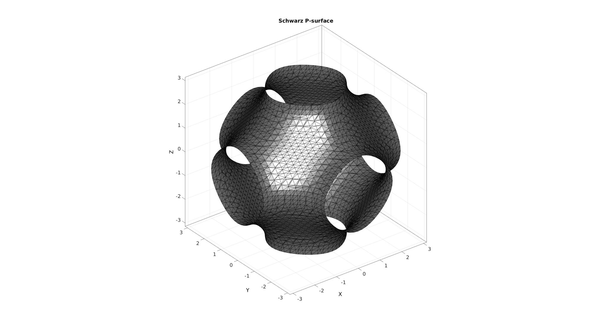
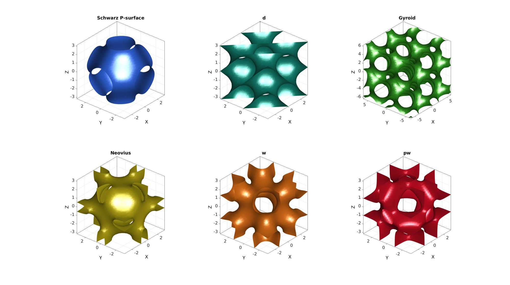
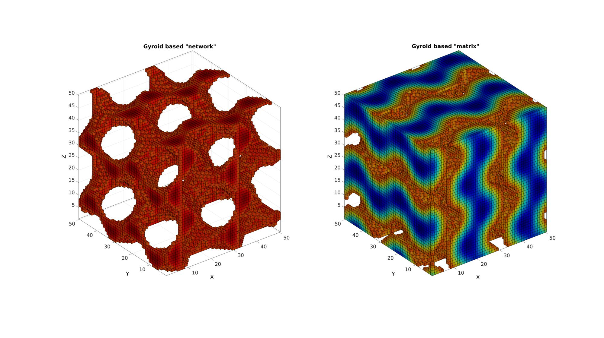
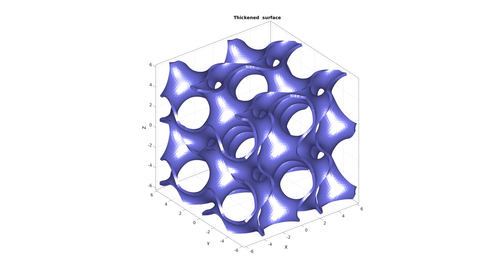
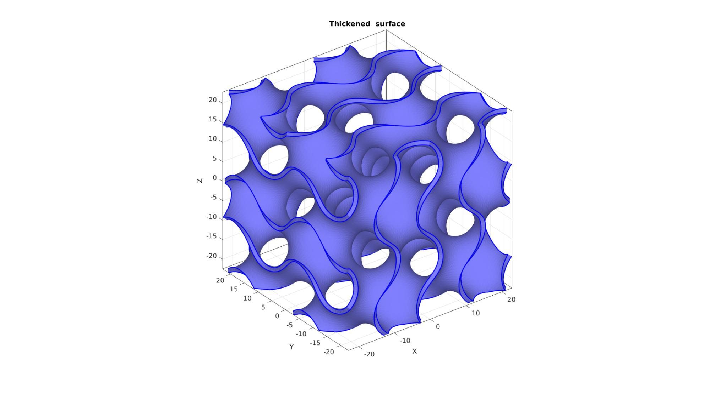

triplyPeriodicMinimal
Below is a demonstration of the features of the triplyPeriodicMinimal function
Contents
clear; close all; clc;
Syntax
S=triplyPeriodicMinimal(X,Y,Z,typeStr);
Description
This function creates the image S which can be used to define triply periodic minimal surfaces. The input consists of a grid of coordinates (X,Y,Z) and the surface type (typeStr).
Examples
clear; close all; clc;
Plot settings
cMap=jet(250); faceAlpha1=1; faceAlpha2=0.65; edgeColor1='none'; edgeColor2='none'; fontSize=25; pColors=gjet(6);
Example: Construct triply periodic minimal surfaces
%Create a grid n=35; [X,Y,Z]=meshgrid(linspace(-pi,pi,n)); %Evaluate triply periodic function S=triplyPeriodicMinimal(X,Y,Z,'p'); %Construct iso-surface [F,V] = isosurface(X,Y,Z,S,0);
Visualize surface
cFigure; hold on; title('Schwarz P-surface','FontSize',fontSize); gpatch(F,V,'kw','k',1); axisGeom; camlight headlight; drawnow;
Visualization all variations
cFigure; subplot(2,3,1); title('Schwarz P-surface','FontSize',fontSize); hold on; gpatch(F,V,pColors(1,:),'none',1); axisGeom; camlight headlight; lighting gouraud; view(-50,30); [X,Y,Z]=meshgrid(linspace(-pi,pi,n)); S=triplyPeriodicMinimal(X,Y,Z,'d'); [F,V] = isosurface(X,Y,Z,S,0.1); subplot(2,3,2); title('d','FontSize',fontSize); hold on; gpatch(F,V,pColors(2,:),'none',1); axisGeom; camlight headlight; lighting gouraud; view(-50,30); [X,Y,Z]=meshgrid(linspace(-2*pi,2*pi,n)); S=triplyPeriodicMinimal(X,Y,Z,'g'); [F,V] = isosurface(X,Y,Z,S,0.6); subplot(2,3,3); title('Gyroid','FontSize',fontSize); hold on; gpatch(F,V,pColors(3,:),'none',1); axisGeom; camlight headlight; lighting gouraud; view(-50,30); [X,Y,Z]=meshgrid(linspace(-pi,pi,n)); S=triplyPeriodicMinimal(X,Y,Z,'n'); [F,V] = isosurface(X,Y,Z,S,0); subplot(2,3,4); title('Neovius','FontSize',fontSize); hold on; gpatch(F,V,pColors(4,:),'none',1); axisGeom; camlight headlight; lighting gouraud; view(-50,30); [X,Y,Z]=meshgrid(linspace(-pi,pi,n)); S=triplyPeriodicMinimal(X,Y,Z,'w'); [F,V] = isosurface(X,Y,Z,S,0); subplot(2,3,5); title('w','FontSize',fontSize); hold on; gpatch(F,V,pColors(5,:),'none',1); axisGeom; camlight headlight; lighting gouraud; view(-50,30); [X,Y,Z]=meshgrid(linspace(-pi,pi,n)); S=triplyPeriodicMinimal(X,Y,Z,'pw'); [F,V] = isosurface(X,Y,Z,S,0.5); subplot(2,3,6); title('pw','FontSize',fontSize); hold on; gpatch(F,V,pColors(6,:),'none',1); axisGeom; camlight headlight; lighting gouraud; view(-50,30); drawnow;
Example: Creating a hexahedral mesh of for a regular trabecular structure
This example renders boundary faces. Use the 'h' option for im2patch to obtain hexehadral elements.
n=50; [X,Y,Z]=meshgrid(linspace(-2*pi,2*pi,n)); S=triplyPeriodicMinimal(X,Y,Z,'g'); T=0.6; c=(max(S(:))*T); L=S>=c; [F1,V1,C1]=im2patch(S,L,'vb'); L=S<c; [F2,V2,C2]=im2patch(S,L,'vb');
Visualization
cFigure; subplot(1,2,1); title('Gyroid based "network"','FontSize',fontSize); xlabel('J','FontSize',fontSize);ylabel('I','FontSize',fontSize); zlabel('K','FontSize',fontSize); hold on; gpatch(F1,V1,C1,'k',1); axisGeom; colormap(cMap); caxis([min(S(:)) max(S(:))]); camlight headlight; subplot(1,2,2); title('Gyroid based "matrix"','FontSize',fontSize); xlabel('J','FontSize',fontSize);ylabel('I','FontSize',fontSize); zlabel('K','FontSize',fontSize); hold on; gpatch(F2,V2,C2,'k',1); axisGeom; colormap(cMap); caxis([min(S(:)) max(S(:))]); camlight headlight; drawnow;
Example: Thickening the surfaces
n=75; typeStr='g'; switch typeStr case 'p' [X,Y,Z]=meshgrid(linspace(-pi,pi,n)); S=triplyPeriodicMinimal(X,Y,Z,'p'); [F,V] = isosurface(X,Y,Z,S,0); case 'g' [X,Y,Z]=meshgrid(linspace(-1.9*pi,1.9*pi,n)); S=triplyPeriodicMinimal(X,Y,Z,'g'); [F,V] = isosurface(X,Y,Z,S,0); V=V./max(V(:)); %Normalize coordinates V=V*45/2; end F1=F; V1=V; %Store originals %Get boundary edges Eb=patchBoundary(F,V); % %Smoothen surface % controlPar.Method='HC'; % controlPar.n=5; % controlPar.RigidConstraints=unique(Eb(:)); % V=patchSmooth(F,V,[],controlPar);
Thicken surface in ward
thicknessOffset=1; %The desired thickness [~,~,N]=patchNormal(F,V); %Vertex normal vectors V1=V-N*thicknessOffset/2; %The offset coordinates V2=V+N*thicknessOffset/2; %The offset coordinates numVertices=size(V,1); V=[V1;V2]; %Append new coordinates F=[F;fliplr(F)+numVertices]; %Append new faces (note offset in indices) Ebb=[Eb;Eb+numVertices];
Close boundary features
optionStruct.outputType='label'; G=tesgroup(Eb,optionStruct); %grouping of boundary edges for q=1:1:max(G(:)) logicGroup=(G==q); Eb_now=Eb(logicGroup,:); fq=[Eb_now fliplr(Eb_now)+numVertices]; %New quadrilateral faces f=[fq(:,[1 2 3]); fq(:,[3 4 1]);]; %New triangular faces F=[F;fliplr(f)]; %Append new faces end [F,V,~,ind2]=mergeVertices(F,V); Ebb=ind2(Ebb); logic1=V(:,3)<(-45/2+0.1); V(logic1,3)=-45/2;
Visualize thickened surface
cFigure; hold on; hold on; title('Thickened surface','FontSize',fontSize); gpatch(F,V,'bw','none',1); gpatch(Ebb,V,'none','b',0,2); % patchNormPlot(F,V); %Visualize face normal directions axisGeom; camlight headlight; drawnow;
The model can be exported to an STL file using export_STL_txt, see HELP_export_STL_txt.

GIBBON www.gibboncode.org
Kevin Mattheus Moerman, gibbon.toolbox@gmail.com
GIBBON footer text
License: https://github.com/gibbonCode/GIBBON/blob/master/LICENSE
GIBBON: The Geometry and Image-based Bioengineering add-On. A toolbox for image segmentation, image-based modeling, meshing, and finite element analysis.
Copyright (C) 2006-2021 Kevin Mattheus Moerman and the GIBBON contributors
This program is free software: you can redistribute it and/or modify it under the terms of the GNU General Public License as published by the Free Software Foundation, either version 3 of the License, or (at your option) any later version.
This program is distributed in the hope that it will be useful, but WITHOUT ANY WARRANTY; without even the implied warranty of MERCHANTABILITY or FITNESS FOR A PARTICULAR PURPOSE. See the GNU General Public License for more details.
You should have received a copy of the GNU General Public License along with this program. If not, see http://www.gnu.org/licenses/.